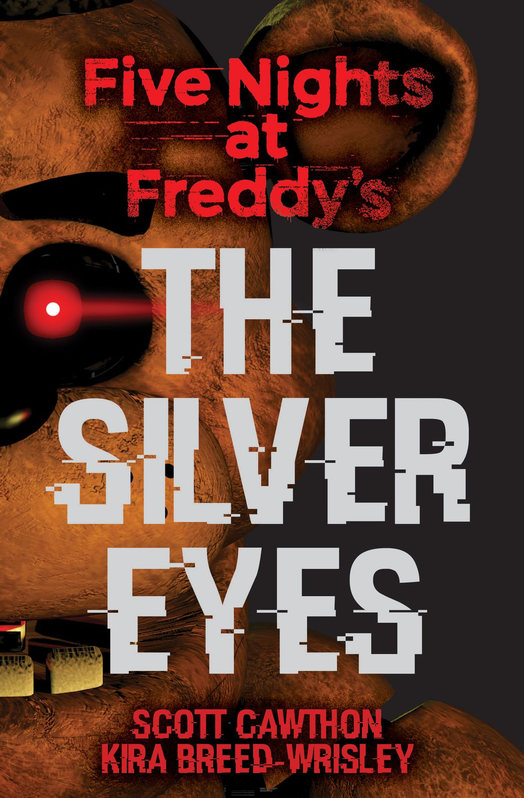
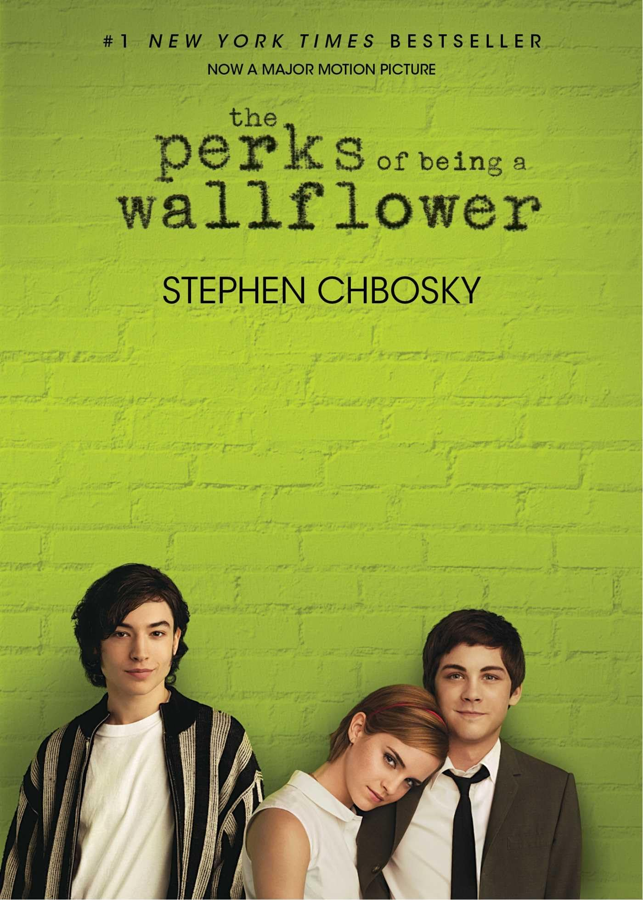
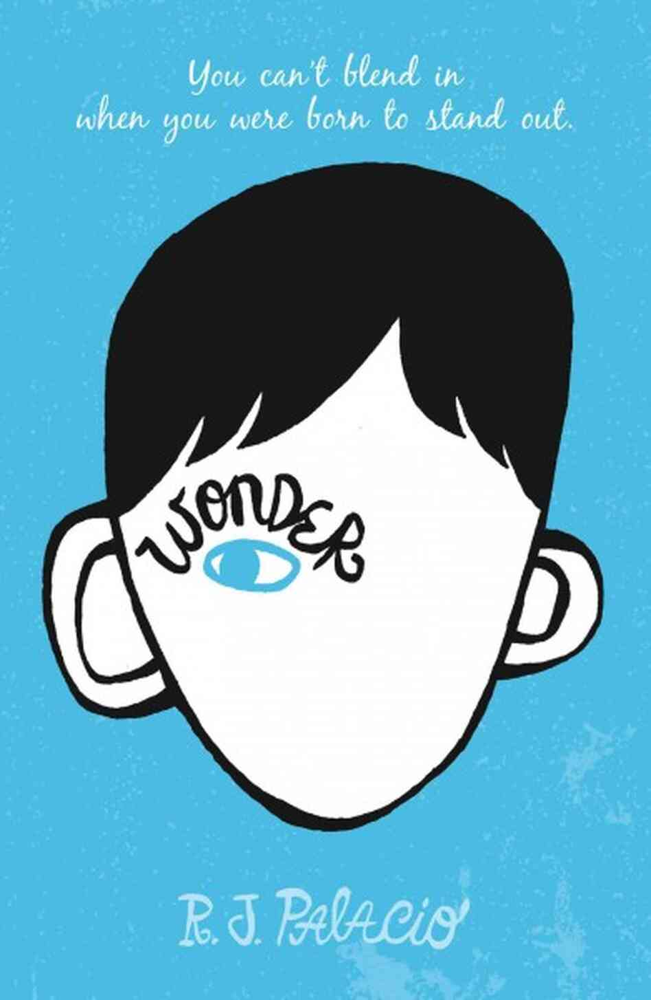

Library Book Collection
These books are available for students to borrow, simply consult Ms.Agnis during the break
What Our Students Are Reading
"I like this book because it delves into the minds of infamous criminals, exploring the psychological factors that drive them to commit horrible acts. it provides insight into the dark and disturbing motivations behind serial killers, offering a chilling glimpse into the human psyche, I find those type of books really entertaining"

"“I’m not into horror books that much, but the silver eyes uses some scenarios that can actually happen in real life, The situations themselves aren’t actually what makes the situation fully scary; it’s the descriptions of how it occurs. It’s simply an immersive take on how terrifying using the uncanny valley can be, also charlie dies”"

"Before the coffee gets cold is a beautifully written heart warming story .It switches between multiple protagonists with their own heartfelt stories ,relationships ,and reasons to want to use the cafe’s magic . with themes of heartbreak , love, loss and death ,it's an emotional rollercoaster but definitely worth the tears"

"I liked this book because it shows the alienation and despair of Ōba Yōzō, a man who feels disconnected from himself and humanity. Since childhood, he’s struggled to understand emotions, hiding behind jokes to mask his confusion. It feels like reading the journal of a man falling apart. By the end, Yōzō sees himself as completely ruined"

"The Perks of Being a Wallflower stuck with me. It speaks perfectly well with what it is to grow up, to feel invisible, yet still find the beauty in little things. Charlie’s story feels so real; his thoughts and emotions just make you feel seen and remind you that it is okay to be different"

"Wonder tells the beautiful story of august, a 10yr boy who struggles in life due to his face deformity, whether it be in social experiences or straight up discrimination it reinforces the idea that we need to look beyond physical appearances and look upon the uniqueness of every individual"
Explore Our Library Collections
ZAS Library Information
Library Availability
You can visit the library everyday during breaks
Remember to bring the books back!
its necassary to keep them in good shape
Need Help?
Ask Mrs. Agnis, our librarian!
Email: yehia8735@gmail.com